- 00 开篇词你为什么需要学习并发编程？.md.html
- 01 如何制定性能调优标准？.md.html
- 02 如何制定性能调优策略？.md.html
- 03 字符串性能优化不容小觑，百M内存轻松存储几十G数据.md.html
- 04 慎重使用正则表达式.md.html
- 05 ArrayList还是LinkedList？使用不当性能差千倍.md.html
- 06 Stream如何提高遍历集合效率？.md.html
- 07 深入浅出HashMap的设计与优化.md.html
- 08 网络通信优化之IO模型：如何解决高并发下IO瓶颈？.md.html
- 09 网络通信优化之序列化：避免使用Java序列化.md.html
- 10 网络通信优化之通信协议：如何优化RPC网络通信？.md.html
- 11 答疑课堂：深入了解NIO的优化实现原理.md.html
- 12 多线程之锁优化（上）：深入了解Synchronized同步锁的优化方法.md.html
- 13 多线程之锁优化（中）：深入了解Lock同步锁的优化方法.md.html
- 14 多线程之锁优化（下）：使用乐观锁优化并行操作.md.html
- 15 多线程调优（上）：哪些操作导致了上下文切换？.md.html
- 16 多线程调优（下）：如何优化多线程上下文切换？.md.html
- 17 并发容器的使用：识别不同场景下最优容器.md.html
- 18 如何设置线程池大小？.md.html
- 19 如何用协程来优化多线程业务？.md.html
- 20 磨刀不误砍柴工：欲知JVM调优先了解JVM内存模型.md.html
- 21 深入JVM即时编译器JIT，优化Java编译.md.html
- 22 如何优化垃圾回收机制？.md.html
- 23 如何优化JVM内存分配？.md.html
- 24 内存持续上升，我该如何排查问题？.md.html
- 25 答疑课堂：模块四热点问题解答.md.html
- 26 单例模式：如何创建单一对象优化系统性能？.md.html
- 27 原型模式与享元模式：提升系统性能的利器.md.html
- 28 如何使用设计模式优化并发编程？.md.html
- 29 生产者消费者模式：电商库存设计优化.md.html
- 30 装饰器模式：如何优化电商系统中复杂的商品价格策略？.md.html
- 31 答疑课堂：模块五思考题集锦.md.html
- 32 MySQL调优之SQL语句：如何写出高性能SQL语句？.md.html
- 33 MySQL调优之事务：高并发场景下的数据库事务调优.md.html
- 34 MySQL调优之索引：索引的失效与优化.md.html
- 35 记一次线上SQL死锁事故：如何避免死锁？.md.html
- 36 什么时候需要分表分库？.md.html
- 37 电商系统表设计优化案例分析.md.html
- 38 数据库参数设置优化，失之毫厘差之千里.md.html
- 39 答疑课堂：MySQL中InnoDB的知识点串讲.md.html
- 41 如何设计更优的分布式锁？.md.html
- 42 电商系统的分布式事务调优.md.html
- 43 如何使用缓存优化系统性能？.md.html
- 44 记一次双十一抢购性能瓶颈调优.md.html
- 加餐 什么是数据的强、弱一致性？.md.html
- 加餐 推荐几款常用的性能测试工具.md.html
- 答疑课堂：模块三热点问题解答.md.html
- 结束语 栉风沐雨，砥砺前行！.md.html
22 如何优化垃圾回收机制？
你好，我是刘超。
我们知道，在 Java 开发中，开发人员是无需过度关注对象的回收与释放的，JVM 的垃圾回收机制可以减轻不少工作量。但完全交由 JVM 回收对象，也会增加回收性能的不确定性。在一些特殊的业务场景下，不合适的垃圾回收算法以及策略，都有可能导致系统性能下降。
面对不同的业务场景，垃圾回收的调优策略也不一样。例如，在对内存要求苛刻的情况下，需要提高对象的回收效率；在 CPU 使用率高的情况下，需要降低高并发时垃圾回收的频率。可以说，垃圾回收的调优是一项必备技能。
这讲我们就把这项技能的学习进行拆分，看看回收（后面简称 GC）的算法有哪些，体现 GC 算法好坏的指标有哪些，又如何根据自己的业务场景对 GC 策略进行调优？
垃圾回收机制
掌握 GC 算法之前，我们需要先弄清楚 3 个问题。第一，回收发生在哪里？第二，对象在什么时候可以被回收？第三，如何回收这些对象？
1. 回收发生在哪里？
JVM 的内存区域中，程序计数器、虚拟机栈和本地方法栈这 3 个区域是线程私有的，随着线程的创建而创建，销毁而销毁；栈中的栈帧随着方法的进入和退出进行入栈和出栈操作，每个栈帧中分配多少内存基本是在类结构确定下来的时候就已知的，因此这三个区域的内存分配和回收都具有确定性。
那么垃圾回收的重点就是关注堆和方法区中的内存了，堆中的回收主要是对象的回收，方法区的回收主要是废弃常量和无用的类的回收。
2. 对象在什么时候可以被回收？
那 JVM 又是怎样判断一个对象是可以被回收的呢？一般一个对象不再被引用，就代表该对象可以被回收。目前有以下两种算法可以判断该对象是否可以被回收。
**引用计数算法：**这种算法是通过一个对象的引用计数器来判断该对象是否被引用了。每当对象被引用，引用计数器就会加 1；每当引用失效，计数器就会减 1。当对象的引用计数器的值为 0 时，就说明该对象不再被引用，可以被回收了。这里强调一点，虽然引用计数算法的实现简单，判断效率也很高，但它存在着对象之间相互循环引用的问题。
**可达性分析算法：**GC Roots 是该算法的基础，GC Roots 是所有对象的根对象，在 JVM 加载时，会创建一些普通对象引用正常对象。这些对象作为正常对象的起始点，在垃圾回收时，会从这些 GC Roots 开始向下搜索，当一个对象到 GC Roots 没有任何引用链相连时，就证明此对象是不可用的。目前 HotSpot 虚拟机采用的就是这种算法。
以上两种算法都是通过引用来判断对象是否可以被回收。在 JDK 1.2 之后，Java 对引用的概念进行了扩充，将引用分为了以下四种：
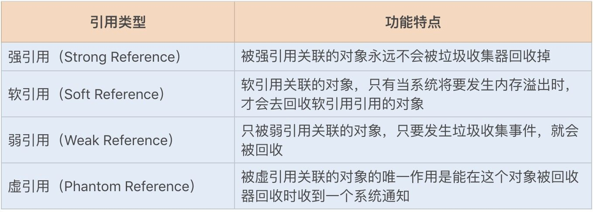
3. 如何回收这些对象？
了解完 Java 程序中对象的回收条件，那么垃圾回收线程又是如何回收这些对象的呢？JVM 垃圾回收遵循以下两个特性。
**自动性：**Java 提供了一个系统级的线程来跟踪每一块分配出去的内存空间，当 JVM 处于空闲循环时，垃圾收集器线程会自动检查每一块分配出去的内存空间，然后自动回收每一块空闲的内存块。
**不可预期性：**一旦一个对象没有被引用了，该对象是否立刻被回收呢？答案是不可预期的。我们很难确定一个没有被引用的对象是不是会被立刻回收掉，因为有可能当程序结束后，这个对象仍在内存中。
垃圾回收线程在 JVM 中是自动执行的，Java 程序无法强制执行。我们唯一能做的就是通过调用 System.gc 方法来"建议"执行垃圾收集器，但是否可执行，什么时候执行？仍然不可预期。
GC 算法
JVM 提供了不同的回收算法来实现这一套回收机制，通常垃圾收集器的回收算法可以分为以下几种：
如果说收集算法是内存回收的方法论，那么垃圾收集器就是内存回收的具体实现，JDK1.7 update14 之后 Hotspot 虚拟机所有的回收器整理如下（以下为服务端垃圾收集器）：
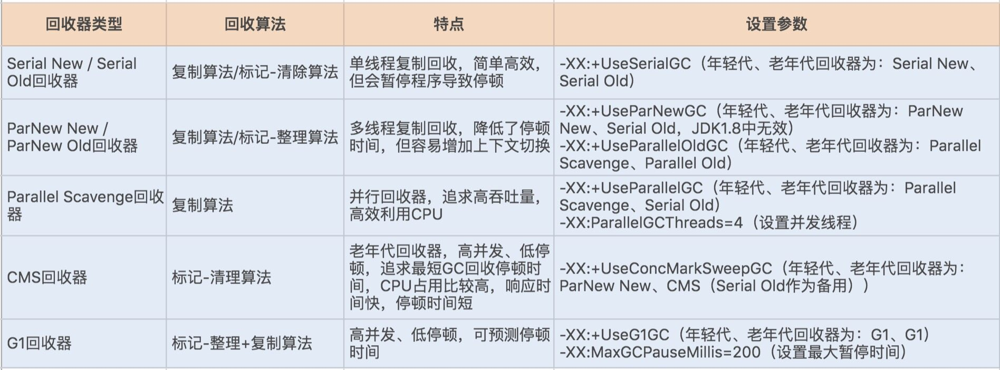
其实在 JVM 规范中并没有明确 GC 的运作方式，各个厂商可以采用不同的方式实现垃圾收集器。我们可以通过 JVM 工具查询当前 JVM 使用的垃圾收集器类型，首先通过 ps 命令查询出经常 ID，再通过 jmap -heap ID 查询出 JVM 的配置信息，其中就包括垃圾收集器的设置类型。
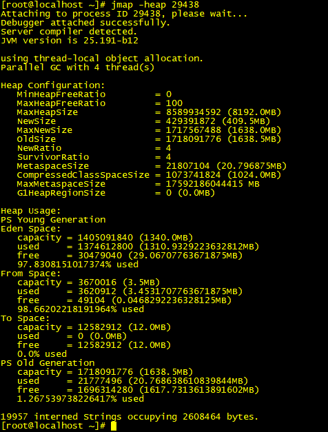
GC 性能衡量指标
一个垃圾收集器在不同场景下表现出的性能也不一样，那么如何评价一个垃圾收集器的性能好坏呢？我们可以借助一些指标。
**吞吐量：**这里的吞吐量是指应用程序所花费的时间和系统总运行时间的比值。我们可以按照这个公式来计算 GC 的吞吐量：系统总运行时间 = 应用程序耗时 +GC 耗时。如果系统运行了 100 分钟，GC 耗时 1 分钟，则系统吞吐量为 99%。GC 的吞吐量一般不能低于 95%。
**停顿时间：**指垃圾收集器正在运行时，应用程序的暂停时间。对于串行回收器而言，停顿时间可能会比较长；而使用并发回收器，由于垃圾收集器和应用程序交替运行，程序的停顿时间就会变短，但其效率很可能不如独占垃圾收集器，系统的吞吐量也很可能会降低。
**垃圾回收频率：**多久发生一次指垃圾回收呢？通常垃圾回收的频率越低越好，增大堆内存空间可以有效降低垃圾回收发生的频率，但同时也意味着堆积的回收对象越多，最终也会增加回收时的停顿时间。所以我们只要适当地增大堆内存空间，保证正常的垃圾回收频率即可。
查看 & 分析 GC 日志
已知了性能衡量指标，现在我们需要通过工具查询 GC 相关日志，统计各项指标的信息。首先，我们需要通过 JVM 参数预先设置 GC 日志，通常有以下几种 JVM 参数设置：
-XX:+PrintGC 输出 GC 日志
-XX:+PrintGCDetails 输出 GC 的详细日志
-XX:+PrintGCTimeStamps 输出 GC 的时间戳（以基准时间的形式）
-XX:+PrintGCDateStamps 输出 GC 的时间戳（以日期的形式，如 2013-05-04T21:53:59.234+0800）
-XX:+PrintHeapAtGC 在进行 GC 的前后打印出堆的信息
-Xloggc:../logs/gc.log 日志文件的输出路径
这里使用如下参数来打印日志：
-XX:+PrintGCDateStamps -XX:+PrintGCDetails -Xloggc:./gclogs
打印后的日志为：
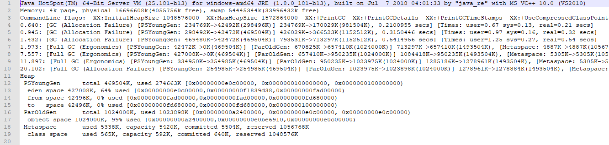
上图是运行很短时间的 GC 日志，如果是长时间的 GC 日志，我们很难通过文本形式去查看整体的 GC 性能。此时，我们可以通过GCView工具打开日志文件，图形化界面查看整体的 GC 性能，如下图所示：
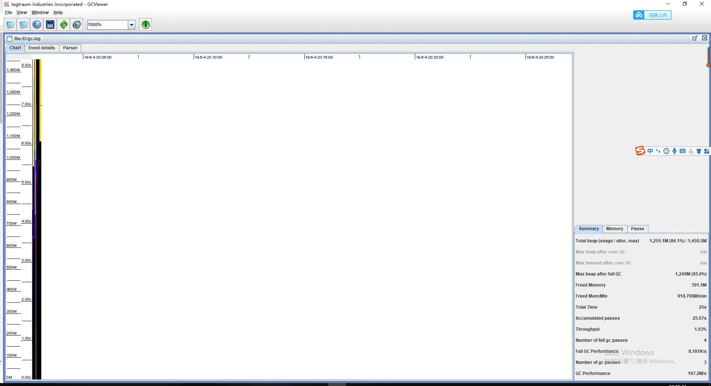
通过工具，我们可以看到吞吐量、停顿时间以及 GC 的频率，从而可以非常直观地了解到 GC 的性能情况。
这里我再推荐一个比较好用的 GC 日志分析工具，GCeasy是一款非常直观的 GC 日志分析工具，我们可以将日志文件压缩之后，上传到 GCeasy 官网即可看到非常清楚的 GC 日志分析结果：
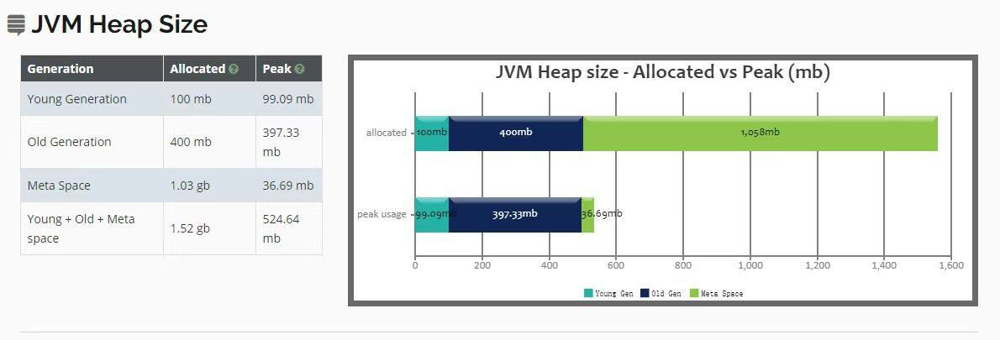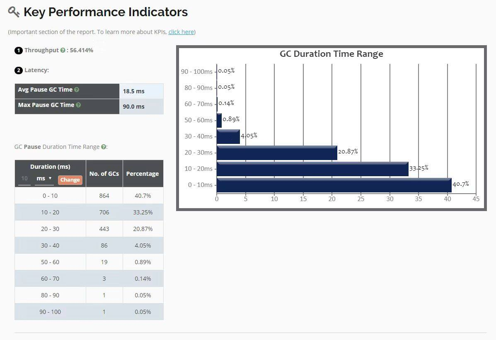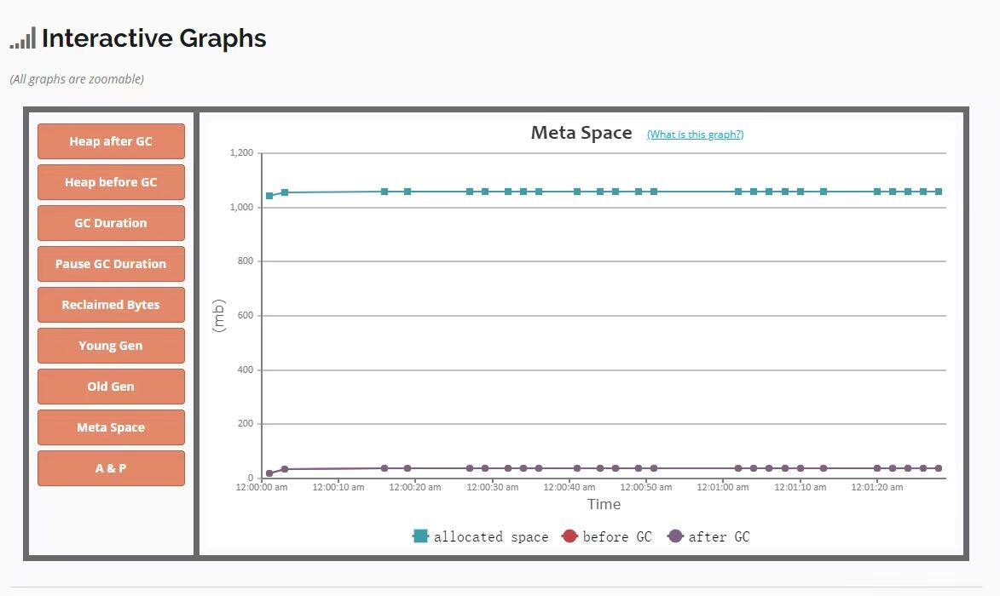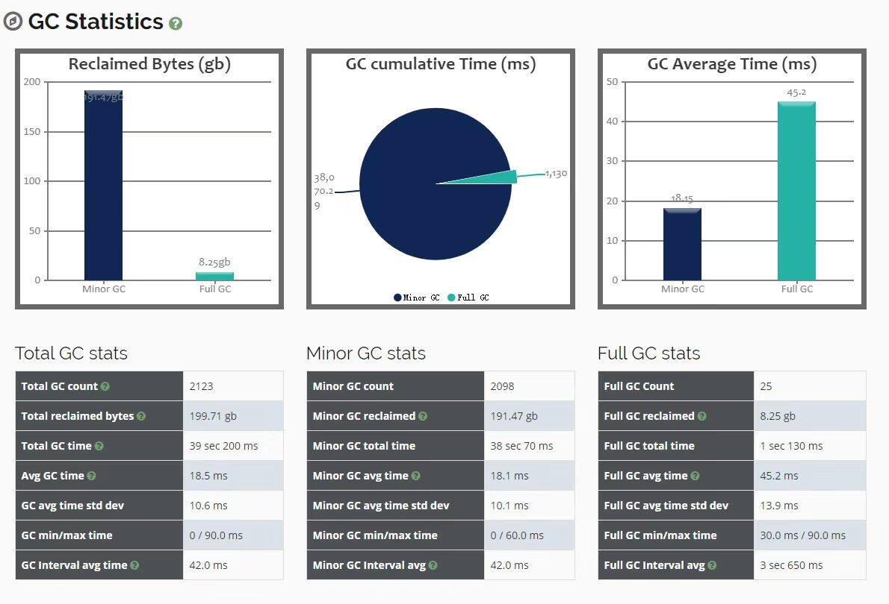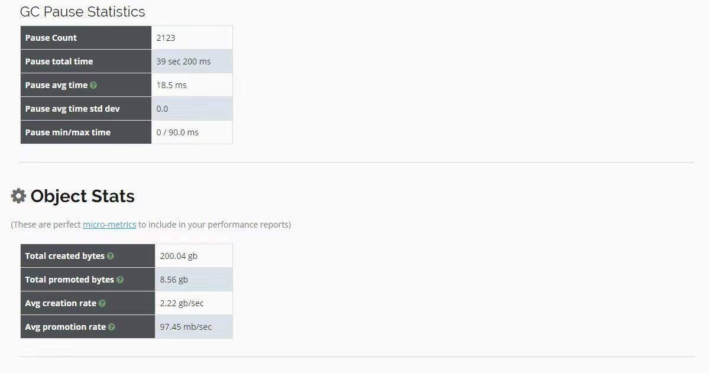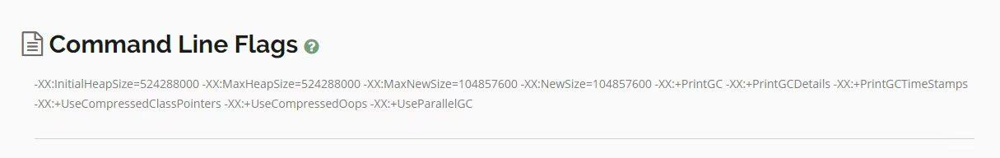
GC 调优策略
找出问题后，就可以进行调优了，下面介绍几种常用的 GC 调优策略。
1. 降低 Minor GC 频率
通常情况下，由于新生代空间较小，Eden 区很快被填满，就会导致频繁 Minor GC，因此我们可以通过增大新生代空间来降低 Minor GC 的频率。
可能你会有这样的疑问，扩容 Eden 区虽然可以减少 Minor GC 的次数，但不会增加单次 Minor GC 的时间吗？如果单次 Minor GC 的时间增加，那也很难达到我们期待的优化效果呀。
我们知道，单次 Minor GC 时间是由两部分组成：T1（扫描新生代）和 T2（复制存活对象）。假设一个对象在 Eden 区的存活时间为 500ms，Minor GC 的时间间隔是 300ms，那么正常情况下，Minor GC 的时间为 ：T1+T2。
当我们增大新生代空间，Minor GC 的时间间隔可能会扩大到 600ms，此时一个存活 500ms 的对象就会在 Eden 区中被回收掉，此时就不存在复制存活对象了，所以再发生 Minor GC 的时间为：两次扫描新生代，即 2T1。
可见，扩容后，Minor GC 时增加了 T1，但省去了 T2 的时间。通常在虚拟机中，复制对象的成本要远高于扫描成本。
如果在堆内存中存在较多的长期存活的对象，此时增加年轻代空间，反而会增加 Minor GC 的时间。如果堆中的短期对象很多，那么扩容新生代，单次 Minor GC 时间不会显著增加。因此，单次 Minor GC 时间更多取决于 GC 后存活对象的数量，而非 Eden 区的大小。
2. 降低 Full GC 的频率
通常情况下，由于堆内存空间不足或老年代对象太多，会触发 Full GC，频繁的 Full GC 会带来上下文切换，增加系统的性能开销。我们可以使用哪些方法来降低 Full GC 的频率呢？
**减少创建大对象：**在平常的业务场景中，我们习惯一次性从数据库中查询出一个大对象用于 web 端显示。例如，我之前碰到过一个一次性查询出 60 个字段的业务操作，这种大对象如果超过年轻代最大对象阈值，会被直接创建在老年代；即使被创建在了年轻代，由于年轻代的内存空间有限，通过 Minor GC 之后也会进入到老年代。这种大对象很容易产生较多的 Full GC。
我们可以将这种大对象拆解出来，首次只查询一些比较重要的字段，如果还需要其它字段辅助查看，再通过第二次查询显示剩余的字段。
**增大堆内存空间：**在堆内存不足的情况下，增大堆内存空间，且设置初始化堆内存为最大堆内存，也可以降低 Full GC 的频率。
选择合适的 GC 回收器
假设我们有这样一个需求，要求每次操作的响应时间必须在 500ms 以内。这个时候我们一般会选择响应速度较快的 GC 回收器，CMS（Concurrent Mark Sweep）回收器和 G1 回收器都是不错的选择。
而当我们的需求对系统吞吐量有要求时，就可以选择 Parallel Scavenge 回收器来提高系统的吞吐量。
总结
今天的内容比较多，最后再强调几个重点。
垃圾收集器的种类很多，我们可以将其分成两种类型，一种是响应速度快，一种是吞吐量高。通常情况下，CMS 和 G1 回收器的响应速度快，Parallel Scavenge 回收器的吞吐量高。
在 JDK1.8 环境下，默认使用的是 Parallel Scavenge（年轻代）+Serial Old（老年代）垃圾收集器，你可以通过文中介绍的查询 JVM 的 GC 默认配置方法进行查看。
通常情况，JVM 是默认垃圾回收优化的，在没有性能衡量标准的前提下，尽量避免修改 GC 的一些性能配置参数。如果一定要改，那就必须基于大量的测试结果或线上的具体性能来进行调整。
思考题
以上我们讲到了 CMS 和 G1 回收器，你知道 G1 是如何实现更好的 GC 性能的吗？
解答：
1 minor gc是否会导致stop the world？ 2 major gc什么时候会发生，它和full gc的区别是什么？
1、不管什么GC，都会发送stop the world，区别是发生的时间长短。而这个时间跟垃圾收集器又有关系，Serial、PartNew、Parallel Scavenge收集器无论是串行还是并行，都会挂起用户线程，而CMS和G1在并发标记时，是不会挂起用户线程，但其他时候一样会挂起用户线程，stop the world的时间相对来说小很多了。
2、major gc很多参考资料指的是等价于full gc，我们也可以发现很多性能监测工具中只有minor gc和full gc。 一般情况下，一次full gc将会对年轻代、老年代以及元空间、堆外内存进行垃圾回收。而触发Full GC的原因有很多： a、当年轻代晋升到老年代的对象大小比目前老年代剩余的空间大小还要大时，此时会触发Full GC； b、当老年代的空间使用率超过某阈值时，此时会触发Full GC; c、当元空间不足时（JDK1.7永久代不足），也会触发Full GC; d、当调用System.gc()也会安排一次Full GC;